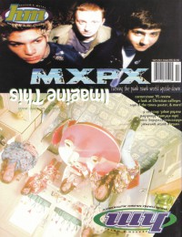
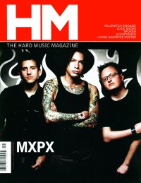

MxPxOn the cover|  | September 1995
HM |
 | September 2003
HM | Media coverage:- Nov 1994 in CCM "Hot New Bands: Rock Music"
- Nov 1994 in Heaven's Metal "MxPx Is Pokin' At Ya!", by Dan MacIntosh
- May 1995 in Campus Life "Tell Me About It: Green Day, MxPx"
- Aug 1995 in CCM "Punks With A Point", by Devlin Donaldson
- Sep 1995 in HM "MXPX are Huge!"
- Nov 1995 in 7ball "MxPx"
- Feb 1996 in Campus Life "Welcome To A Punk Show", by MadDog
- Feb 1996 in HM "Concert Review: MxPx", by Brian Vincent McGovern
- Nov 1996 in HM "Plain ol' Ordinary Guys", by Ginny McCabe
- Jan 1997 in HM "Concert Review: MxPx, Value Pac, Ninety Pound Wuss", by Brian Vincent McGovern
- Mar 1997 in CCM "The Game of Life", by Michael Ciani
- Mar 1997 in 7ball "MxPx", by Jeff Ebel
- Jul 1997 in HM "Concert Review: Stavesacre, MxPx, Puller", by Kevin L. Dayton
- Jul 1997 in CCM "In Concert: Mississippi Nights, St. Louis, MO", by Brian Quincy Newcomb
- Oct 1997 in CCM "On The Beat: Life In The Fast Lane"
- Aug 1998 in CCM "Where The Buffalo Roam", by Dave Urbanski
- Sep 1998 in HM "buffaloes aren't extinct", by Dan MacIntosh
- Sep 1998 in CCM Brasil "Aonde o Búfalo Vagueia", by Dave Urbanski
- Jul 2000 in HM "The Band That Could", by Ronnie Martin
- Aug 2000 in CCM "One on One", by Tim Foreman
- May 2001 in HM "Never Never Land", by Jason E Dodd
- May 2001 in HM "Concert Review: Live At La Zona Rosa", by Bethany Reed
- Jul 2001 in CCM "On Tour: The Ritz Theatre, Raleigh, NC", by David McCreary
- Sep 2003 in HM "MxPx", by Brian Quincy Newcomb
- Dec 2003 in CCM "Standing Room Only: Aragon Ballroom, Chicago, IL", by Andy Argyrakis
- May 2004 in HM "Live Report: MxPx", by David Allen
- May 2005 in HM "Hard Music History: MxPx", by Doug Van Pelt
- Jul 2005 in HM "Survival School", by David Huff
- Jan 2006 in CCM "Standing Room Only: MxPx, Relient K", by Andy Argyrakis
- Mar 2006 in Relevant "Slices: Not Just Trailblazers, OK?"
- Apr 2006 in CCM "!Pop Punk", by Tony Shore
- Jan 2007 in HM "Bremerton MVPs", by David Stagg
- Jan 2007 in HM "Poster: MxPx"
- Apr 2007 in CCM "Grey Skies Turn Blue", by Jackie A. Chapman
- Jul 2007 in HM "The Tooth & Nail Time Machine", by Dan MacIntosh
- May 2009 in HM "Are Huge In Japan", by Doug Van Pelt
- Sep 2010 in HM "Hardnews: Quick & Concise: MxPx Drummer Retires"
- Jan 2012 in HM "Fly To Bremerton: Filming a Band at the Crossroads", by Doug Van Pelt
- Apr 2012 in HM "MxPx", by Dan MacIntosh
- Oct 2014 in HM "The Jump: Columns: Bands Deserving of a Biopic", by Matt Francis
- Jan 2015 in HM "Columns: Transcending Diet Pepsi, Chris Staples Delivers", by Matt Francis
Albums & reviews:1994: Pokinatcha1995: Teenage Politics1995: On the Cover1996: Life in General1996: Move To Bremerton1998: Slowly Going the Way of the Buffalo1998: Let It Happen1999: At the Show2000: Broxen Bones 7"2000: The Everpassing Moment2001: The Renaissance EP2002: Ten Years and Running2003: Before Everything & After2005: B-Movie2005: Panic2006: Let It Happen [Rerelease]2006: Let's Rock2007: Secret Weapon2009: Left Coast Punk EP2009: On The Cover ||2012: Plans Within Plans2014: Acoustic Collection Award Summary (Nominations / Wins)Dove AwardsBillboard Music Video AwardsBooks about MxPx- "MxPx (a.k.a. Magnified Plaid)" in The Encyclopedia of Contemporary Christian Music (Mark Allan Powell, 2002)
- "MxPx" in The Billboard Guide to Contemporary Christian Music (Barry Alfonso, 2002)
|